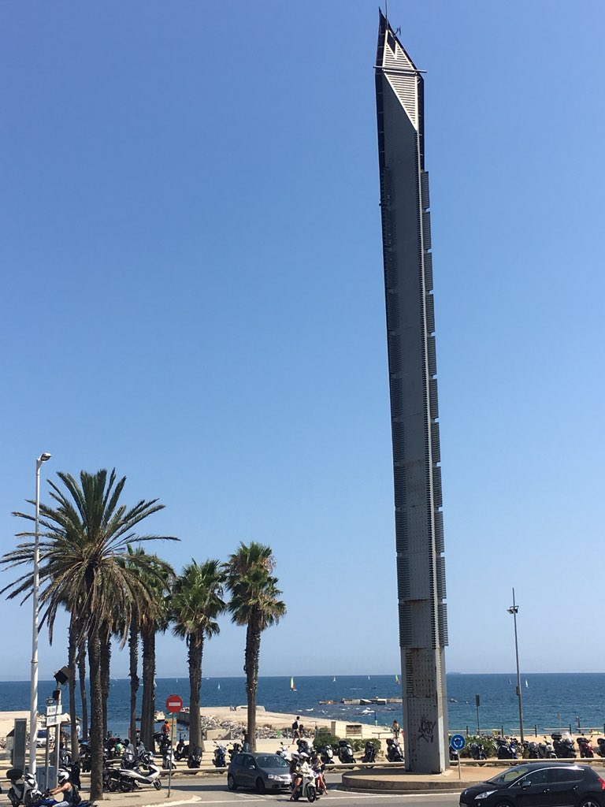

  	<div class="flex-wrap">
      
  	  <article class="tweet  " id="main">
  	    <p class="full_text">
  	      Well this doesn’t suck <div class="gallery"><ul><li><a href="../../tweets_media/1022118210093633542-Di9LFeIUcAI6CZO.jpg"></a></li></ul></div>
  	    </p>
  	    <p class="created_at">
  	      7/25/2018, 6:55:45 AM
  	    </p>
  	    <p class="favorite_count">Favs: 6</p>
  	    <p class="retweet_count">Retweets: 0</p>
  	    <a class="permalink" href="../1022118210093633542">link</a>
  	  </article>

  	</div>
  </div>
